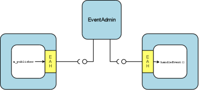

The iPOJO documentation has moved
The new web site is here, update your bookmark.
Event Admin Handlers
The goal of the Event Admin Handlers is to allow event communications between iPOJO component instances. The implementation of these handlers relies on an event admin services. It enables the iPOJO component to listen to a list of topics and to receive all related events. It also allows components to send events in an easy way.
| change in the 1.2.0 The 1.2.0 version use the namespace : org.apache.felix.ipojo.handlers.event instead of org.apache.felix.ipojo.handlers.event.EventAdminHandler. |
| change in the 1.7.0 The @Publisher annotation is now deprecated and replaced by @Publishes. |
An example
Hereafter is presented a small example :
@Component @Instantiate public class MyComponent { @Publishes( // or @Publisher before the 1.7.0 name="myPublisher", topics="bar,nuts") private Publisher m_publisher; @Subscriber( name="mySubscriber", topics="foo") public void receive(Event e) { // Event received // Do something with the event } }
This component can also be described using the XML formalism:
<ipojo
xmlns:ev="org.apache.felix.ipojo.handlers.event">
<component className="...MyComponent">
<ev:subscriber
name="mySubscriber"
callback="receive"
topics="foo"/>
<ev:publisher
name="myPublisher"
field="m_publisher"
topics="bar,nuts"/>
</component>
<instance component="...MyComponent"/>
</ipojo>
In XML, you need to specify the namespace of the Handler. You can find here one event subscriber (named mySubscriber) and one event publisher (named myPublisher). In these handler configurations, the name parameter is mandatory. The topics parameter is optional as it can be specified in the instance configuration. The callback parameter of the mySubscriber element is mandatory and indicates the method that handles received events. In this case, this method must have a single argument of type org.osgi.service.event.Event. The field parameter of the myPublisher element indicates the field (of type org.apache.felix.ipojo.handlers.event.publisher.Publisher) that is used by the POJO to send events on the specified topics. All type compliance will be checked by the handler at component instantiation time.
Download
The event admin handlers (to send and receive events) are available in the Felix trunk in the iPOJO project. See the Download page to download and compile these sources.
How does it work?
The handler will parse the description provided in the metadata, and register for you the EventHandler in the OSGi Registry. On one hand, your POJO will receive each event through the handler. With this handler you can specify different callback methods for different topics. On the other side, the handler instantiates and injects configured Publisher references in your POJO, so you can send events transparently through these publishers.
EventHandler Specification
Here you can find all configuration options of the EventAdmin handler. As seen before, the handler contains two components : the event subscriber and the event publisher. These components can be configured, using several attributes, as described below. Some of these attributes can be (re)defined in the instance configuration.
Handler namespace : org.apache.felix.ipojo.handlers.event
Event subscriber attributes
| Attribute name | Required | Description |
|---|---|---|
| name | YES | The name of the event subscriber, acting as a unique identifier. |
| callback | YES | The name of the POJO's method that will be called each time an event is received. This method takes only one parameter, of typeorg.osgi.service.event.Eventby default, but this type can be overridden by defining the data-key and/or the data-type attributes. |
| topics | YES* | The comma-separated-list of the topics that the handler will listen to. Each event sent on a topic present in this list will be sent to the specified callback method. |
| data-key | NO | The data key is used when you want to receive data events. This attribute's value is the key corresponding to the received data in the event's dictionary. If you use this attribute, the parameter passed to the callback method is the the value associated to this key, not the whole event. This attribute is generally used with the data-type attribute to specify the received object type. If an event is received and it does not contain such a key, it is ignored (with a warning message). |
| data-type | NO | This attribute is associated to the data-key attribute. It specifies the type of objects (java.lang.Objectby default) that the callback expects. It is used to determine the unique callback method (in case of multiple methods with the same name) and to check type compliance at event reception. Data events that are not corresponding to the specified type will be ignored (with a warning message). |
| filter | NO* | The event filter is used to filter incoming events before sending them to the callback. The syntax of this field is described in the OSGi EventAdmin Specification. If you don't specify a filter, all events sent on the listened topics will be considered. |
* These attributes can be (re)defined in the instance configuration.
Event publisher attributes
| Attribute name | Required | Description |
|---|---|---|
| name | YES | The name of the event publisher, acting as a unique identifier. |
| field | YES | The name of the POJO's field that will be used to send events. The field is initialized at component instantiation time. The type of the field must be : org.apache.felix.ipojo.handlers.event.publisher.Publisher. Despite it creates a dependency between the component code and the handler, this system allows hiding the whole complexity of event sending. |
| topics | YES* | The comma-separated-list of the topics on which events will be sent. |
| data-key | NO | The data key is used when you want to send data events. This attribute's value is the key, in the event's dictionary, in which sent data are stored. When you use the sendData method of the Publisher, the given object is placed in the event dictionary, associated with the specified data-key. The default value of this attribute is user.data. |
| synchronous | NO | Determines if event sending is synchronous or not. By default, events are sent asynchronously, but you can specify there the desired behaviour of the Publisher. The default value of this attribute is "false". |
* These attributes can be (re)defined in the instance configuration.
Instance configuration
Some of the described attributes can be (re)defined in the instance configuration section of your metadata file. Its permits to configure event management instance by instance. The following properties are used by the handler :
- event.topics : overrides topics attribute, available for both subscribers and publishers configuration
- event.filter : overrides filter attribute, available for subscribers configuration only.
Publisher interface
The Publisher interface is the link between the component code and the handler. It permits to publish events on the topics specified in the component's description (or instance configuration). The implemented methods are :
- public void send(Dictionary content);
This method is used to send a standard event, with the specified content. Some specific properties may be added in the content to satisfy EventAdmin specification. (e.g., event.topic). - public void sendData(Object o);
This method is the easier way to send data. The given object is placed in the event dictionary according to the data-key attribute (or its default value). Then, this dictionary is sent as a normal event.
Handler Architecture
Here is shown the global architecture of the EventHandler : the interactions between the user components (i.e., POJO), the handler and the OSGi runtime environment.

EventHandler Features
In this section, you will find some examples of the handler's features.
Instance customization
As described in the 'Instance configuration' section, you can (re)define some of the subscribers or publishers attributes. You can notice that required attributes that are not defined in the component description must be defined in the instance configuration section. Hereafter is an example of an instance configuration of this handler :
<ipojo> <instance component="...MyComponent"> <property name="event.topics"> <property name="mySubscriber" value="foo"/> <property name="myPublisher" value="bar,nuts"/> </property> <property name="event.filter"> <property name="mySubscriber" value="|((arg=Minibar)(arg=Coconuts))"/> </property> </instance> </ipojo>
Data events
One of the most important features of the EventHandler is the capability of sending and receiving data events. You may know that the OSGi EventAdmin Service allows bundles to send custom objects in events, inserting them in the event's dictionary. The EventHandler hides the dictionary manipulation and allows iPOJO components to receive custom objects at any time.
First, you have define the data-key attribute in the publisher configuration (dataKey in annotations). Sent objects will be contained in the event dictionary and are accessible with the "user.data" key.
<ipojo
xmlns:ev="org.apache.felix.ipojo.handlers.event">
<component className="...DataPublisher">
<ev:publisher
name="myPublisher"
field="m_publisher"
topics="myTopic"
data-key="my.data"/>
</component>
<instance component="...DataPublisher"/>
</ipojo>
Then you can use the sendData method of your configured publisher.
import org.apache.felix.ipojo.handlers.event.publisher.Publisher; //... public class DataPublisher ... { private Publisher m_publisher; public void doSomething() { // MyFavoriteType extends MyFavoriteInterface MyFavoriteType data = new MyFavoriteType(...); //... // Send a data event m_publisher.sendData(data); } }
The second step is to configure an event subscriber to receive such events. The data-key attribute's value of the subscriber must be the same than the publisher's one. The data-type describes the type of received data events, and thus, must be compatible with the sent object's type (i.e., super-class or inherited interface). Then you can finally receive the sent object in the callback method. The parameter type of the callback must be the same than the data-type attribute value.
<ipojo xmlns:ev="org.apache.felix.ipojo.handlers.event"> <component className="...DataEventSubscriber"> <ev:subscriber name="mySubscriber" callback="handleData" topics="myTopic" data-key="my.data" data-type="my.package.MyFavoriteInterface"/> </component> <instance component="...DataEventSubscriber"/> </ipojo>
import my.package.MyFavoriteInterface; //... public class DataEventSubscriber ... { public void handleData(MyFavoriteInterface o) { // Object received //... } }
Annotations use a different set of attributes:
- data-key is replaced by dataKey
- data-type is replaced by dataType
Note on synchronous event sending
By default, events are sent using asynchronous sending (a.k.a.post in OSGi EventAdmin). You can use synchronous sending by defining the synchronous attribute of your publisher to true.
The behavior of synchronous event sending is particular when you specify several topics in the publisher description. The event is synchronously sent to each topic, one by one. So when you return from this function, you can be sure that the event has been delivered to each topic.
Publisher instance information
All events sent by a publisher contains the name of the component instance that sent them. Its enables to filter received events depending the sender instance. The instance name is accessible in the event dictionary by the key publisher.instance.name. Despite it goes against MOM principles, this property is useful to trace events and especially event sources.
Configuring the handler with annotations
It is possible to configure the handler with a simple annotations available in the annotation pack ('annotation' project in the iPOJO trunk). Here is an example of usage:
import org.apache.felix.ipojo.annotations.Component; import org.apache.felix.ipojo.handlers.event.Subscriber; import org.apache.felix.ipojo.handlers.event.Publishes import org.apache.felix.ipojo.handlers.event.Publisher; import org.osgi.service.event.Event; @Component public class PubSub { @Publishes(name="p1", synchronous=true) Publisher publisher1; @Publishes(name="p2", synchronous=false, topics="foo,bar", data_key="data") Publisher publisher2; @Publishes(name="p3", synchronous=true, topics="bar") Publisher publisher3; @Subscriber(name="s1", data_key="data") public void receive1(Object foo) { // Process event } @Subscriber(name="s2", topics="foo,bar", filter="(foo=true)") public void receive2(Event foo) { // Process event } @Subscriber(name="s3", topics="foo", data_key="data", data_type="java.lang.String") public void receive3(String foo) { // Process event } }